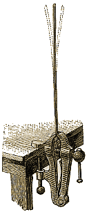
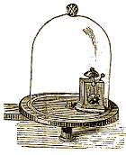

222. Définition. - L'acoustique est la partie la physique qui a pour objet l'étude des sons et des lois d'après lesquels ils se produisent et se propagent.
|  | |
| Fig. 202. - Mouvement vibratoire d'une lame d'acier. |
223. Production du son. - Le son est le résultat du mouvement vibratoire des corps sonores. Tous les corps, au moment où ils émettent des sons, ont leurs molécules animées d'un mouvement vibratoire très rapide. Si l'on arrête ce mouvement, le son cesse aussitôt de se faire entendre. Lorsqu'on pince une corde de violon ou de harpe pour en tirer un son, on distingue très bien les vibrations qu'elle exécute de chaque côté de sa position d'équilibre.
Pour que les vibrations produisent des sons, il faut qu'elles aient une certaine rapidité. Ainsi, quand on fixe dans un étau une longue lame d'acier, et qu'après l'avoir écartée de sa position d'équilibre, on l'abandonne à elle-même, cette lame exécute une série de vibrations très lentes, mais elle ne rend aucun son. Si l'on raccourcit peu à peu la lame d'acier, les vibrations deviennent de plus en plus rapides, et il arrive un moment où l'on entend un son. D'abord très grave, ce son devient d'autant plus aigu que la partie vibrante est rendue plus courte et, par conséquent, que les vibrations sont plus rapides. Des expériences très précises ont démontré que le son le plus grave que notre oreille puisse percevoir, correspond à 16 vibrations par seconde, et le plus aigu, à 48.000. [1]
|  | |
| Fig. 203. - Sonnerie dans le vide. |
224. Propagation du son. - Le son ne se propage pas dans le vide. Pour le vérifier, on place sous la cloche d'une machine pneumatique un mécanisme d'horlogerie à l'aide duquel un petit marteau frappe continuellement sur un timbre. Tant que la cloche reste pleine d'air, on entend parfaitement le son du timbre, mais à mesure qu'on fait le vide, le son s'affaiblit de plus en plus, et il cesse complètement de se faire entendre lorsque la raréfaction de l'air est arrivée à un degré suffisant.
Le son se propage donc dans l'air, mais l'air n'est pas le seul véhicule du son : les autres gaz, les liquides et les solides peuvent aussi servir à le transmettre. Ainsi, quand on frappe deux pierres l'une contre l'autre, sous l'eau, au fond d'une rivière, on entend parfaitement de la rive le bruit du choc. Inversement, un plongeur entend du fond de l'eau ce que l'on dit sur le rivage.
La conductibilité des solides pour les sons est telle, que le bruit produit par le plus léger frottement à l'extrémité d'une poutre peut être perçu à l'autre extrémité. Le sol conduit si bien les sons, que, la nuit, en appliquant l'oreille contre terre, on peut entendre à de grandes distances le galop d'un cheval et même les pas d'un voyageur. En mettant l'oreille contre la poitrine d'une personne, on entend distinctivement le bruit des battements du coeur et celui que l'air produit par son passage dans les poumons. Les médecins utilisent cette propriété pour ausculter leurs malades.

Fig. 204. - Propagation du son.
225. Mode de propagation du son dans l'air. - L'air transmet les sons en entrant lui-même en vibration. Ainsi, lorsqu'on frappe une cloche à l'aide de son battant, la cloche vibre et communique son mouvement vibratoire aux molécules d'air en contact avec elle ; celles-ci font vibrer à leur tour des molécules plus éloignées, et ainsi de suite ; de sorte que, d'une molécule à la molécule suivante les vibrations de la cloche sont transmises à l'oreille de l'auditeur. Les molécules d'air en vibration produisent des ondulations analogues à celles qui prennent naissance à la surface des eaux quand on y laisse tomber un objet quelconque. Ces ondes sonores forment des sphères concentriques dont le centre est occupé par le corps producteur du son.
Fig. 205. - Tuyau acoustique.
226. Tuyaux acoustiques. - Porte-voix. - Lorsque le son se propage dans un tube, il peut parcourir de grandes distances sans s'affaiblir sensiblement, parce que les parois du tube, en réfléchissant les ondes sonores, leur conservent presque toute leur élasticité. Les tuyaux acoustiques et les porte-voix sont basés sur cette propriété.
Les tuyaux acoustiques se composent d'un tube de la grosseur du doigt, terminé à ses deux extrémités par un pavillon fermé a l'aide d'un petit sifflet que l'on peut enlever à volonté.
Pour se servir de ces appareils, on souffle d'abord dans le tube, afin de prévenir par un coup de sifflet la personne à qui l'on veut parler. Celle-ci prévient aussi par un coup de sifflet qu'elle est à son poste, et, approchant de son oreille le pavillon du tuyau acoustique, elle écoute les paroles qui lui sont adressées.
Les porte-voix sont des tubes métalliques destinés à transmettre la parole à de grandes distances. Ils sont légèrement coniques et se terminent par un pavillon très évasé.
Fig. 206. - Porte-voix.
Les porte-voix en usage dans la marine ont jusqu'à deux mètres de longueur ; avec ces instruments, on peut faire entendre des sons à 5 ou 6 kilomètres de distance.
227. Vitesse du son. - Le son ne se propage pas instantanément dans l'air, car si d'une certaine distance on observe la décharge d'une arme à feu, on voit la fumée produite par la combustion de la poudre bien avant d'entendre la détonation. La vitesse du son, mesurée en 1822 par Gay-Lussac et Arago, a été trouvée de 340 mètres par seconde.
Les vents augmentent la vitesse du son quand ils soufflent dans le sens de sa propagation ; ils la diminuent quand ils ont une direction contraire. Tous les sons, forts ou faibles, graves ou aigus, se propagent avec la même vitesse ; aussi l'harmonie d'un concert n'est-elle point modifiée qu'il soit entendu de loin ou de prés.
228. Echo. - L'écho est la répétition d'un son déjà entendu. Il est produit par la réflexion des ondes sonores rencontrant un obstacle. Lorsque les ondes sonores vont frapper contre un obstacle, un rocher, par exemple, elles se réfléchissent de la même manière que le font les rayons lumineux rencontrant une surface polie. L'oreille qui a déjà entendu directement le son, est de nouveau impressionnée par ces ondes sonores après leur réflexion, et entend le son une seconde fois.
L'écho est simple quand il ne répète les sons qu'une fois : il est multiple quand il le fait plusieurs fois. Les échos multiples sont dus à plusieurs obstacles qui se renvoient successivement les sons. Parmi les plus connus, on peut citer celui de la Halle aux farines, à Paris, qui répète trois fois une phrase de six ou sept syllabes ; celui des tours de Verdun, qui reproduit treize fois les mêmes sons, et celui du château de Simonette, en Italie, qui répète quarante fois la détonation d'une arme à feu.
[1] ATTENTION, il s'agit là d'une erreur car si l'oreille humaine est bien capable d'entendre une fréquence à partir de 16 hertz, elle ne peut percevoir plus de 20 000 Hertz, et encore, dans la mesure ou l'individu soit très jeune (naissant) car l'ouïe décline tout normalement avec l'âge. [note du transcripteur HTML]